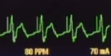
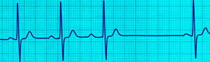
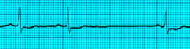

UNSTABLE BRADYCARDIA
Unstable means the patient has one of these:
- Chest pain
- Shortness of breath
- Hypotension
- Altered Mental Status
- Shock
- Pulmonary Edema
We pace unstable bradycardia, ASAP!
Turn on the Monitor Defibrillator
Press the PACER BUTTON.
Use the LEAD BUTTON Select lead II
Place the electrodes
Make sure the pacer is in Demand mode. Press OPTIONS BUTTON, then use the speed dial to select DEMAND.
Demand mode means that the pacer delivers an impulse only when needed. If an intrinsic beat occurs prior to the set interval, the pacer won't fire.
Set the rate at 70-80 (arrow keys)
You will see the sense markers (little triangles over each QRS)


Set current strength at 40-60 mA (arrow keys), you may have to go upto 100mA.
As you increase the current strength, watch the monitor for electrical capture.
This means that the spike from the pacer is followed immediately by a QRS complex.
Now you have electrical capture. Set the current strength 2 mA above whatever you had to use to achieve capture.
Now check the pulse to make sure it is a perfusing rhythm, which means now you have mechanical capture.
Once the TCP is noted to be working , give sedation with Valium 5mg IV. This is necessary since TCP is painful.
While pacing is going on, if at any point you need to find out what is the underlying non-paced rhythm, hold down the PAUSE BUTTON. The pacing will resume when you take your finger off.
While getting ready to pace, administer Atropine 0.5mg IV . This may be repeated every 3 minutes upto a max of 3mg. Do not let this delay the use of TCP in an unstable patient. Atropine may also be given 2mg in 10ml Normal Saline through ET
If TCP fails, start Dopamine at 2-10 micrograms/kg/minute OR Epinephrine 2-10 micrograms / minute
Once his rate is stabilized on the TCP, make preparations for transvenous pacing by the cardiologist. TCP should not be used for more than 6 hours and is only a stop-gap measure.
If during the pacing, patient goes into a shockable rhythm, press the CHARGE BUTTON, and pacing will stop.
Remember, while you are getting the TCP ready and putting the leads on, the rest of the team should be taking care of other items on the list:
- Oxygen by simple face mask
- Start an IV
- 3 lead EKG to be hooked up
- Pulse oximeter to be hooked up
- NIBP to be connected to monitor BP
- Draw venous blood and sent it off.
- If chest pain is present, this needs to be addressed
Something to remember about Atropine. Atropine is not effective for Second degree block Type II or for Third Degree Block. In second degree block type II, what you see is dropped QRS complexes. In third degree block , you will see total dissociation of P waves and QRS complexes.
Second Degree AV Block, Type I (PR interval gradually increases until a QRS is dropped)
Second Degree AV Block, Type II (PR stays the same, QRS just gets dropped)

Third Degree Block (P waves are regular, QRS complexes are regular, but PR is variable since there is no fixed relationship between P and QRS)

Sick Sinus Syndrome (Observe how the entire P-QRS complex is dropped, and how the PR intervals are normal) This includes Sinus Arrest (pauses are NOT multiples of RR intervals) and Sinus Block (pauses are multiples of RR intervals)
Atropine can be problematic in myocardial ischemia, because it increases myocardial oxygen demand.
Symptomatic SSS needs permanent pacing. 50% of these patients eventually will develop tachybradyarrhythmias such as AFib.
If rate <40 pacing advisable even if asymptomatic.


Read Other Page
Read All Page
Ventricular Fibrillation
It this was an unwitnessed arrest, meaning it did not happen in front of you, you should give him 5 cycles of CPR...
Read More
Infant Cpr
Perform 30 chest compressions. Use two fingers and deliver the compressions over the breastbone, just below the nipple line...
Read More

Cpr General Principles
CPR sequence is Compressions- Airway - Breathing. The only exception is drowning victims where the sequence is...
Read More